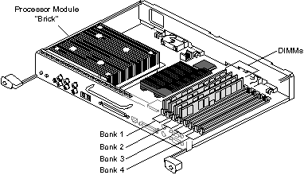

Operating Documentation
Direction 5114045-800, Rev# 10
LightSpeed 4.X Service Information (Advanced)
Operating Documentation |
DIMM errors appear in the OC error log file, SYSLOG, located in the directory /var/adm/. Hard (unrecoverable) memory errors will cause an SGI operating system (Irix) PANIC. Usually, a PANIC message will be posted to a screen window and logged in /var/adm/SYSLOG. The offending module will be identified by its socket number.
A boot-up failure message indicating “PANIC: CPU parity error interrupt” may mean there is a bad module in the first bank. If the system will not re-boot after a hard memory error PANIC, it is probably because the Octane host needs the first memory bank to be in good working in order for boot up. To eliminate this possibility, swap all modules in the first bank with those in the second. For the Octane host, this means swap the modules in S3 and S4 with those in S1 and S2 (see Illustration 1). Before doing this, check that all DIMMs are correctly seated in their slots.
Illustration 1: Octane System Module

To view only the critical host errors, open a shell and type:
sysmon /var/adm/SYSLOG for today's entries or /var/adm/SYSLOG.0 for yesterday's
Or, from the Service Desktop, select [ERROR LOGS] and [SYSTEM BROWSER] , then select [SYSLOG OC] from the View pull-down menu, select the SYSLOG you wish to view in the Option box, and press [VIEW FILE] to view the entire syslog.
To do a more complete test, interrupt <ESC> boot-up, Enter Command Monitor and type:
ide memtest
SGI Part #9940069 (YELLOW LABEL)
32MB DIMM-a pair makes 64MB
GEMS part # =2169940-5 pair
SGI Part #9940084 (BLUE LABEL) or9470178 (GREEN LABEL)
64MB DIMM-a pair makes 128MB
GEMS part # =2169940-6 pair
SGI Part #9470168 (BROWN)
28MB DIMM 2K REFRESH-a pair makes 256MB
GEMS part # =2169940-411 pair
SGI Part #9010020 (BROWN)
128MB DIMM 4K REFRESH-a pair makes 256MB
GEMS part # =2169940-411 pair
| NOTE: | The “4k refresh” DIMMs can only be used in the newer “Enhanced IP30”, which is GEMS part # 2169940-45 (SGI #030-1467-001). These 4k refresh DIMMs cannot be used in the older Octane IP30, which is GEMS part #2169940-13 (SGI #030-0887-003). Use the IRIX 'hinv -mvv' command, or read the IP30 label to determine the IP30 version you have. |
SGI Part #9470223 (RED)
256MB DIMM 4K REFRESH-a pair makes 512MB
GEMS part # =2169940-TBD1 pair
DATARAM Part # 60056 (no color code)
32MB DIMM-a pair makes 64MB
GEMS part # -21998061 pair
DATARAM Part # 62614 (no color code)
64MB DIMM-a pair makes 128MB
GEMS part # -2199806-21 pair
DATARAM Part # 62615 (no color code)
128MB DIMM-a pair makes 256MB
GEMS part # -2199806-51 pair
DATARAM Part #________ (no color code)
256MB DIMM-a pair makes 512MB
GEMS part # -2199806-61 pair